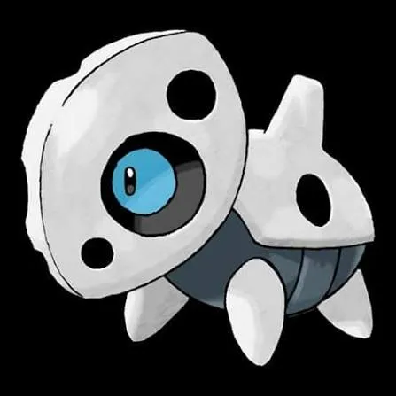
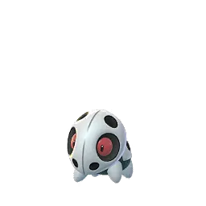
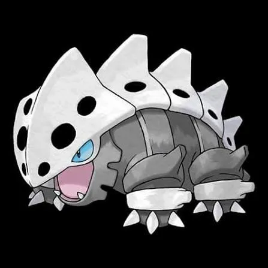
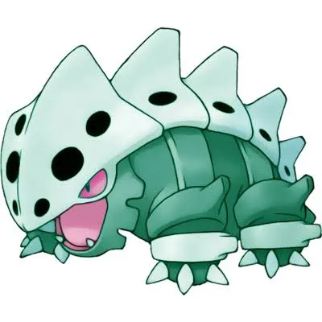
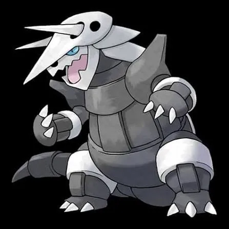
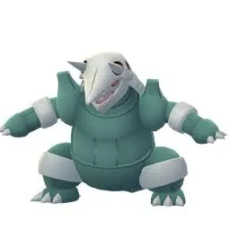
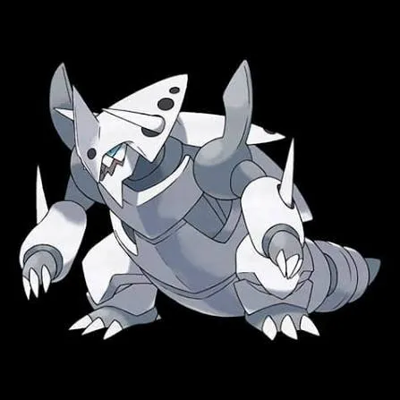
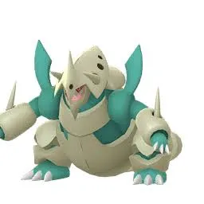

🧭 Quick Navigation
📖 Introduction
Mega Aggron stands out for its high defensive stats, but its double weakness to Fighting-type attacks makes it easier to handle with proper counters.
The Mega Evolution of Aggron transforms this already durable Pokémon into an even more formidable raid boss in Pokémon GO. Mega Aggron loses its Rock typing when it Mega Evolves and becomes a pure Steel-type Pokémon, which significantly changes its strengths and weaknesses compared to its normal form.
While Mega Aggron has excellent defensive stats and many resistances, it also has clear weaknesses that trainers can exploit. Strong Fighting, Fire, and Ground-type attackers are especially effective against it, making Pokémon like Conkeldurr, Reshiram, and Groudon valuable raid counters.
Mega Aggron is useful because:
- It boosts Steel-type attackers
- It is extremely tanky and survives a long time in battles
- It is useful in some niche PvP and raid situations
This raid guide will explain everything trainers need to know about defeating Mega Aggron, including its weaknesses, best counters, movesets, catch CP ranges, weather boosts, and raid strategies for both small and large raid groups.
Raid Difficulty
This raid typically requires 3–5 trainers depending on player level, counters, and weather conditions.
📊 Mega Aggron Stats
| Type | Steel |
| Max CP | 4705 |
| Weather Boost | Snowy |
| Shiny | Yes |
| Base Attack | 247 |
| Base Defence | 331 |
| Base Stamina | 172 |
Mega Aggron has one of the highest defense stats in Pokémon GO, which is why it can absorb a lot of damage during raids.
🎯 Catch CP & 100% IV
CP Range:
- No Weather Boost: 1636 – 1716 CP
- Weather Boost: 2045 – 2145 CP CP
100% IV:
- 1716 (Normal)
- 2145 (Weather Boosted)
Use:
- Golden Razz Berry
- Curveball Excellent Throws
⚠️ Mega Aggron Weaknesses
Because Mega Aggron becomes pure Steel type, it has only one weakness:
| Category | Details |
|---|---|
| ❌ Weak To: |
 Fire • Fire •
 Fighting • Fighting •
 Ground Ground
|
| ✅ Resistant To: |
 Normal • Normal •
 Flying • Flying •
 Poison • Poison •
 Rock • Rock •
 Bug • Bug •
 Psychic • Psychic •
 Ice • Ice •
 Fairy • Fairy •
 Dragon Dragon
|
Notes: Mega Aggron has a double weakness to Fighting-type moves, making Fighting Pokémon the most effective counters. Other weaknesses include Ground, Fire, and Water, which can be used as secondary options.
🗡️ Best Counters for Mega Aggron
Selecting the right counters is critical against Mega Aggron’s massive bulk. Fighting-type Pokémon with strong DPS moves are the best choice.
🥊 Fighting-Type Counters (Top Priority)
Fighting-type Pokémon are the most effective against Mega Aggron’s double weakness. Moves like Counter paired with Dynamic Punch or Close Combat deal massive damage. Mega Fighting-type Pokémon can provide a team-wide boost, increasing total raid efficiency.
- Lucario: (Force Palm / Aura Sphere)
- Keldeo: (Low Kick / Secret Sword)
- Conkeldurr: (Counter / Dynamic Punch)
Fighting is super-effective vs Steel
High DPS for short raid battles
Fast energy generation with Counter
🔥 Fire-Type Counters
Fire-type Pokémon are strong secondary counters, exploiting Mega Aggron’s Steel typing. Fast moves like Fire Spin and charged moves such as Blast Burn deal consistent damage, but they are slightly slower than Fighting counters.
- Blaziken: (Fire Spin)
- Heatran: (Fire Spin / Magma Storm)
- Charizard X: (Fire Spin / Blast Burn)
Fire deals super-effective damage to Steel
Many Fire Pokémon have high attack stats
Mega Fire Pokémon boost other Fire attackers in raids
🌍 Ground-Type Counters
Ground Pokémon can also deal super-effective damage to Mega Aggron’s Rock typing. These are useful if you don’t have a full Fighting or Fire team, but they may take more damage from Steel-type moves.
- Groudon: (Mud Shot / Precipice Blades)
- Garchomp: (Mud Shot / Earth Power)
- Excadrill: (Mud Slap / Scorching Sands)
Extremely high Ground-type damage and raid boost
Ground hits Steel for super-effective damage
Many Ground Pokémon have very high attack stats
🏆 Best Regular Counters
Regular pokemon that amplify the right types give you a powerful edge. Below are top Regular counters with short notes on why they excel.
| Pokémon | 🗡️ Fast Moves | 💥 Charged Moves | 🔄 Elite Moves | 🏆 Best Moves | 🧪 Why This Counter Works |
|---|---|---|---|---|---|
| Blacephalon | Astonish / Incinerate | Shadow Ball / Overheat / Mystical Fire | Mind Blown | Incinerate and Overheat | Fire-type attacks hit Steel super-effectively and its high Special Attack allows strong burst damage. |
| Blaziken | Counter / Fire Spin / Ember | Focus Blast / Aura Sphere / Brave Bird / Overheat / Blaze Kick | Stone Edge / Blast Burn | Counter / Fire Spin and Overheat | Fighting-type moves exploit Mega Aggron’s double weakness, making it one of the fastest raid counters. |
| Heatran | Bug Bite / Fire Spin | Earth Power / Stone Edge / Iron Head / Fire Blast / Flamethrower | Magma Storm | Fire Spin and Fire Blast | Fire-type moves deal super-effective damage to Steel while Heatran resists many Steel attacks. |
| Reshiram | Fire Fang / Dragon Breath | Stone Edge / Overheat / Draco Meteor / Crunch | Fusion Flare | Fire Fang and Overheat | Fire-type attacks hit Steel super-effectively and its high Attack stat ensures strong DPS. |
| Groudon | Mud Shot / Dragon Tail | Earthquake / Fire Blast / Solar Beam | Precipice Blades / Fire Punch | Mud Shot and Precipice Blades | Ground-type moves deal super-effective damage to Steel and benefit from strong base Attack. |
| Keldeo(Original) | Low Kick / Poison Jab | Close Combat / Sacred Sword / X-Scissor / Aqua Jet / Hydro Pump | None | Low Kick and Sacred Sword | Fighting-type moves exploit Mega Aggron’s double weakness while Water typing provides balanced coverage. |
| Landorus | Mud Shot / Extrasensory | Superpower / Earthquake / Bulldoze / Stone Edge | Sandsear Storm | Extrasensory and Sandsear Storm | Ground-type attacks hit Steel super-effectively and Sandsear Storm provides high DPS. |
| Lucario | Counter / Bullet Punch | Close Combat / Power-Up Punch / Aura Sphere / Shadow Ball / Flash Cannon / Meteor Mash / Blaze Kick / Thunder Punch | Force Palm | Counter and Close Combat | One of the strongest Fighting-type attackers, exploiting Mega Aggron’s double weakness with high DPS. |
| Terrakion | Double Kick / Smack Down / Zen Headbutt | Close Combat / Earthquake / Rock Slide | Sacred Sword | Double Kick and Sacred Sword | Fighting-type attacks take advantage of Mega Aggron’s double weakness, delivering powerful charged damage. |
| Keldeo(Resolute) | Low Kick / Poison Jab | Close Combat / Sacred Sword / X-Scissor / Aqua Jet / Hydro Pump | None | Poison Jab and Hydro Pump | Fighting-type moves hit Steel double super-effectively, making it a strong offensive option. |
| Primal Groudon | Mud Shot / Dragon Tail | Earthquake / Fire Blast / Solar Beam | Precipice Blades / Fire Punch | Mud Shot and Precipice Blades | Ground-type attacks exploit Steel weakness while Primal boost enhances overall team damage. |
Mega Aggron’s dual Steel/Rock typing makes it highly resistant to many attacks, but strong Fighting and Ground types — such as Machamp and Garchomp — bring the most consistent super-effective damage.
👤 Best Shadow Counters
Shadow pokemon that amplify the right types give you a powerful edge. Below are top Shadow counters with short notes on why they excel.
| Pokémon | 🗡️ Fast Moves | 💥 Charged Moves | 🔄 Elite Moves | 🏆 Best Moves | 🧪 Why This Counter Works |
|---|---|---|---|---|---|
| Shadow Heatran | Bug Bite / Fire Spin | Earth Power / Stone Edge / Iron Head / Fire Blast / Flamethrower | Magma Storm | Fire Spin and Fire Blast | Shadow boost increases Fire-type DPS while hitting Steel super-effectively. |
| Shadow Groudon | Mud Shot / Dragon Tail | Earthquake / Fire Blast / Solar Beam | Precipice Blades / Fire Punch | Dragon Tail and Solar Beam | Shadow boost greatly increases Ground-type damage against Steel weakness. |
| Shadow Excadrill | Mud Slap / Mud Shot / Metal Claw | Earthquake / Drill Run / Scorching Sands / Rock Slide / Iron Head | None | Mud Slap and Earthquake | Ground-type attacks exploit Steel weakness and Shadow boost enhances burst damage. |
| Shadow Blaziken | Counter / Fire Spin / Ember | Focus Blast / Aura Sphere / Brave Bird / Overheat / Blaze Kick | Stone Edge / Blast Burn | Counter / Fire Spin and Overheat | Shadow boost combined with Fighting-type double weakness results in extremely high DPS. |
| Shadow Garchomp | Mud Shot / Dragon Tail | Earthquake / Sand Tomb / Fire Blast / Outrage / Breaking Swipe | Earth Power | Dragon Tail and Fire Blast / Earthquake | Ground-type attacks deal super-effective damage and Shadow boost increases overall output. |
| Shadow Emboar | Low Kick / Ember | Focus Blast / Rock Slide / Heat Wave / Flame Charge | Blast Burn | Ember and Focus Blast | Fighting and Fire coverage exploit Steel weakness while Shadow boost improves raid damage. |
| Shadow Conkeldurr | Counter / Poison Jab | Dynamic Punch / Focus Blast / Stone Edge | Brutal Swing | Counter / Poison Jab and Focus Blast | Fighting-type attacks exploit Mega Aggron’s double weakness with boosted Shadow damage. |
| Shadow Machamp | Counter / Bullet Punch | Dynamic Punch / Close Combat / Cross Chop / Rock Slide / Heavy Slam | Karate Chop / Submission / Stone Edge / Payback | Counter and Close Combat / Stone Edge | Shadow boost combined with Fighting-type moves makes it one of the highest DPS options. |
| Shadow Raikou | Thunder Shock / Volt Switch | Aura Sphere / Shadow Ball / Thunder / Thunderbolt / Wild Charge | None | Volt Switch and Aura Sphere / Shadow Ball / Thunder | Provides strong neutral damage with Shadow boost, though it does not hit super-effectively. |
| Shadow Hariyama | Counter / Force Palm / Bullet Punch | Close Combat / Dynamic Punch / Superpower / Upper Hand / Heavy Slam | None | Counter and Close Combat | Fighting-type attacks exploit Mega Aggron’s double weakness and Shadow boost increases DPS. |
| Shadow Rhyperior | Mud Slap / Smack Down | Skull Bash / Superpower / Earthquake / Stone Edge / Surf / Breaking Swipe | Rock Wrecker | Mud Slap and Earthquake | Ground-type moves hit Steel super-effectively while Shadow boost enhances damage output. |
Mega Aggron’s dual Steel/Rock typing makes it highly resistant to many attacks, but strong Fighting and Ground types — such as Machamp and Garchomp — bring the most consistent super-effective damage.
⚡ Best Mega Counters
Mega pokemon that amplify the right types give you a powerful edge. Below are top Mega counters with short notes on why they excel.
| Pokémon | 🗡️ Fast Moves | 💥 Charged Moves | 🔄 Elite Moves | 🏆 Best Moves | 🧪 Why This Counter Works |
|---|---|---|---|---|---|
| Mega Lucario | Counter / Bullet Punch | Close Combat / Power-Up Punch / Aura Sphere / Shadow Ball / Flash Cannon / Meteor Mash / Blaze Kick / Thunder Punch | Force Palm | Counter and Close Combat | Boosts all Fighting-type teammates while exploiting Mega Aggron’s double weakness. |
| Mega Blaziken | Counter / Fire Spin | Focus Blast / Brave Bird / Overheat / Blaze Kick | Stone Edge / Blast Burn | Counter / Fire Spin and Overheat | Provides Fighting-type team boost and deals double super-effective damage. |
| Mega Garchomp | Mud Shot / Dragon Tail | Earthquake / Sand Tomb / Fire Blast / Outrage / Breaking Swipe | Earth Power | Dragon Tail and Fire Blast / Earthquake | Ground-type attacks exploit Steel weakness and Mega boost enhances team Ground DPS. |
| Mega Heracross | Counter / Struggle Bug | Close Combat / Upper Hand / Earthquake / Rock Blast / Megahorn | None | Counter and Close Combat | Fighting-type moves hit Steel double super-effectively while boosting team Fighting damage. |
| Mega Charizard X | Air Slash / Fire Spin | Dragon Claw / Fire Blast / Air Cutter / Overheat | Dragon Breath / Ember / Wing Attack / Flamethrower / Blast Burn | Fire Spin and Overheat | Fire-type attacks hit Steel super-effectively and Mega boost improves Fire-type teammates. |
| Mega Charizard Y | Air Slash / Fire Spin | Dragon Claw / Fire Blast / Air Cutter / Overheat | Dragon Breath / Ember / Wing Attack / Flamethrower / Blast Burn | Fire Spin and Overheat | One of the strongest Fire-type Megas, boosting Fire teammates and hitting Steel weakness. |
| Mega Gallade | Low Kick / Confusion / Psycho Cut / Charm | Close Combat / Leaf Blade / Psychic | Synchronoise | Charm and Close Combat | Fighting-type moves exploit double weakness while Mega boost strengthens team DPS. |
| Mega Swampert | Mud Shot / Water Gun | Sludge Wave / Sludge / Earthquake / Surf / Muddy Water | Hydro Cannon | Mud Shot and Hydro Cannon | Ground-type attacks deal super-effective damage and Mega boost enhances Ground teammates. |
💊 Revive & Potion Cost
- Average revives used: 8–14
- Average potions used: 10–18
- Dodging significantly reduces resource usage
- Using Mega Pokémon reduces total relobbies
❌ Common Raid Mistakes
Avoid using fragile Water or Ice attackers—they'll often be outpaced by Aggron's high damage. Also be cautious with Ghost types if Aggron runs Crunch.
🧩 Best Team Compositions
- Lead with strongest Fighting-type attacker
- Follow with two additional Fighting Pokémon
- Add one Fire-type attacker for backup
- Finish with Water- or Ground-type Pokémon for coverage
Avoid Steel- and Rock-type Pokémon for offense, as Mega Aggron resists those moves.
Best Team (3–5 Trainers)
- Mega Lucario
- Primal Groudon
- Mega Blaziken
- Shadow Heatran
- Mega Garchomp
Alternate Team (Balanced)
- Terrakion
- Keldeo
- Shadow Groudon
- Shadow Excadrill
- Shadow Conkeldurr (Counter + Dynamic Punch)
If weather boosts Fighting or Ground attacks (Cloudy or Sunny weather), adjust your team to prioritize boosted counters to maximize DPS.
👥 Raid Difficulty & Trainers Needed
Due to Mega Aggron’s high defense, it is generally more difficult than other Mega raids. Optimal team composition and coordination are crucial.
- 2 Trainers: Possible with high-level Fighting Pokémon
- 3 Trainers: Comfortable clear
- 4–5 Trainers: Easy win
- 6+ Trainers: Very safe
🧠 Raid Strategy & Advanced Tips
1. Stack Fighting-Type Attackers
Because of the double weakness, stacking strong Fighting-type Pokémon is the fastest strategy. Even lower-level Fighting Pokémon can perform well, but high-level counters make the raid much easier.
2. Watch for Steel-Type Charged Moves
Mega Aggron can use Steel-type moves like Heavy Slam, which deal heavy damage to Fire or Water counters. Prioritize Fighting-type Pokémon for both offense and survivability.
3. Coordinate Mega Evolutions
Only one Mega Evolution boost is needed at a time. Coordinate with your raid group so that a Mega Fighting Pokémon is active for maximum team-wide DPS.
Mega Aggron’s Steel typing means its greatest vulnerabilities are Fighting, Ground, and Water attacks. While its defenses are very high, choosing Pokémon that take advantage of these weaknesses significantly speeds up the battle. Pokémon like Machamp, Conkeldurr, and Lucario bring powerful Fighting-type charged moves that hit super-effectively, especially when boosted by favorable weather.
Weather conditions play a crucial role in this raid. In Cloudy weather, Fighting-type attacks are boosted, which increases your team’s overall DPS. During Rainy weather, Water-type counters such as Swampert and Feraligatr see improved performance, which can help balance damage and survivability. Conversely, Clear or Sunny weather may slightly favor Rock-type moves from Mega Aggron, so building counters that resist Rock attacks helps maintain your team’s endurance.
Dodging heavy charged moves like Iron Head or Rock Slide can buy your team extra seconds and reduce unnecessary KO’s. Prioritize deploying your strongest counters early, and if you’re battling with a raid group, coordinate switch-ins so that high-damage Pokémon are not knocked out too quickly by powerful charged moves.
If using Mega Evolutions, Mega Lucario and Mega Charizard X provide strong offensive support against Mega Aggron’s bulk, especially in small lobbies or solo attempts. These Mega Pokémon empower allied attackers and leverage type advantage to create faster clear times.
🌦️ Weather Boost
Weather conditions strongly influence Mega Aggron raids:
☀️ Sunny Weather
- boosts Fire and Ground attackers.
☁️ Cloudy Weather
- boosts Fighting-types attackers.
🌨️ Snowy Weather
- boosts Steel-types attackers.
🌀 Mega Aggron Moveset
🗡️ Fast Moves
- Dragon Tail
- Iron Tail
- Smack Down
💥 Charged Moves
- Stone Edge
- Rock Tomb
- Thunder
- Meteor Beam
- Heavy Slam
Pro tip: While it doesn’t hit extremely fast, its high defense and solid damage output can slowly drain your team’s resources if you’re not doing enough DPS.
Mega Aggron’s combination of Rock and Steel moves means many counters take neutral or resisted damage, so focus on durability and dodge charged attacks when possible.
🎮 Is Mega Aggron Good in PvE and PvP?
Is Mega Aggron Good in PvP?
Aggron is not commonly used in PvP leagues because many stronger Steel Pokémon exist.
Is Mega Aggron Good in PvE?
Mega Aggron is not one of the best raid attackers, but it is extremely durable. However, its Mega Evolution provides useful Steel-type attack boosts for raid teams.
✨ Can Mega Aggron Be Shiny in Pokémon GO?
Yes, trainers can encounter a Shiny Aggron after defeating Mega Aggron in a Mega Raid battle. While the Mega Evolution itself cannot be caught, players will encounter the standard Aggron after the raid, which has a chance of being shiny.
Shiny Aggron has a distinctive green and silver appearance compared to the normal gray version. Because shiny Pokémon are rare, many trainers participate in multiple Mega Aggron raids to increase their chances of encountering one.
Mega Raids often have improved shiny encounter rates compared to wild Pokémon, making them a great opportunity for collectors looking to add a shiny Aggron to their Pokémon GO collection.
Evolution, Mega Details & Buddy Distance
| Evolution Line | Base(Aron) → Stage(Lairon) → Final(Aggron) → Mega(Aggron) |
| Mega Energy (First) | 200 |
| Subsequent Cost | 40 |
| Buddy Distance | 1 km |
| Mega Energy via Buddy | Yes |
| Mega Boost Bonus(Walking) | Extra Candy |
| Mega Boost Bonus(Catch) | Extra Steel-type Candy |
🚶 Buddy Distance
1 km (per Pokémon GO buddy distance)
⚖️ Shadow & Mega Comparison
🧬 Best Mega Evolutions
Recommended Megas to use against Mega Aggron:
- Lucario, Blaziken, Heracross, Gallade – 🥊 Fighting boost
- Blaziken, Charizard X, Charizard Y – 🔥 Fire boost
- Garchomp, Swampert – 🌍 Ground boost
🎁 Raid Rewards
After defeating Mega Aggron in a Mega Raid in Pokémon GO, trainers receive several valuable rewards. These rewards include items useful for powering up Pokémon, healing your raid team, and preparing for future battles.
| Reward | Typical Amount |
|---|---|
| Golden Razz Berry | 3 – 10 |
| Rare Candy | 2 – 6 |
| Revive | 6 – 15 |
| Hyper Potion | 6 – 15 |
| Fast TM | 0 – 2 |
| Charged TM | 0 – 2 |
| Stardust | 1000 |
Mega Energy Reward
Mega Raids also reward Mega Energy. After defeating Mega Aggron, players receive:
- 150 – 250 Mega Aggron Energy
- The amount depends on how quickly the raid boss is defeated.
Premier Balls (Catch Attempt)
After completing the raid, trainers receive Premier Balls to catch Aggron. The number of Premier Balls depends on:
- Damage dealt in the raid
- Gym control bonus
- Friendship bonus
- Team contribution
Typically trainers receive 8 – 16 Premier Balls.
Additional Bonuses
- 10,000 XP for completing a Mega Raid
- Chance to catch high IV Aggron
- Friendship bonus XP when raiding with friends
📌 Is Mega Aggron Worth Raiding?
Mega Aggron provides useful Mega Energy for future Steel- or Rock-type Pokémon. While it is extremely bulky, its slow speed makes it ideal for practicing coordination and team composition. High-level trainers can also farm Mega Energy quickly using optimized counters.
🖼️ Regular vs Shiny Mega Aggron Forms
Shiny Aggron has a distinctive green and silver appearance compared to the normal gray version.

Aron

Shiny Aron

Lairon

Shiny Lairon

Mega Aggron

Shiny Aggron

Mega Aggron

Shiny Mega Aggron
Tips & Tricks
- Bring at least two strong Fighting or Ground-type counters.
- Use dodging to preserve shields and maximize damage output.
- Coordinate with other trainers to reduce raid duration and avoid fainting.
❓ FAQ
Can Mega Aggron be shiny in Pokémon GO?
Yes, if the regular Aggron shiny form is available in Pokémon GO, you have a chance to encounter a shiny after the raid.
How many trainers are needed to defeat Mega Aggron?
With strong counters, 2–4 trainers are usually enough. Newer players may prefer 4–6 trainers for a safer clear.
What type is Mega Aggron in Pokémon GO?
Mega Aggron is a pure Steel-type Pokémon. Unlike its regular form, it does not have the Rock typing when Mega Evolved.
Is Mega Aggron difficult to defeat?
Mega Aggron has very high defense but lower offensive pressure compared to other Mega Raids, making it manageable with proper counters.
Does Mega Aggron keep its Mega form after the battle?
Mega Evolution lasts only during battles where Mega is enabled; it does not persist outside combat.
What is Mega Aggron’s exclusive move?
Mega Aggron can use moves like Heavy Slam and Iron Head, dealing massive damage and utilizing its high defense to endure longer battles.
Is Mega Aggron difficult to defeat?
It has extremely high defense but lower speed and special attack. Using type-advantage Pokémon ensures efficient and manageable battles.
What makes Mega Aggron unique?
Its massive steel-plated body, incredible defense, and ability to withstand strong attacks make Mega Aggron visually imposing and strategically challenging in Max Raid Battles.
🏁 Conclusion
Mega Aggron raids require patience, preparation, and strategic planning. Focus on strong Fighting-type counters, coordinate Mega Evolution boosts, and take advantage of Cloudy weather for maximum efficiency. With proper planning, you can defeat this tanky Mega Pokémon and collect valuable Mega Energy for future battles.
- Use Fighting, Ground, or Fire types.
- Don’t rely on Dragon, Fairy, or Normal types — they deal poor damage.
- Keep DPS high to beat its huge defense.
- Bring a team-boosting Mega if possible.
⚡Quick picks
- Best Mega Team: Lucario, Blaziken, Garchomp
- Best Shadow Team: Groudon, Heatran
- Best Regular Team: Keldeo, Groudon